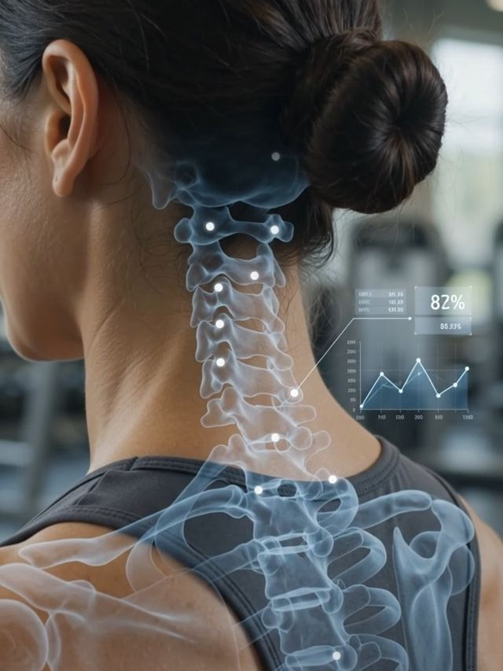
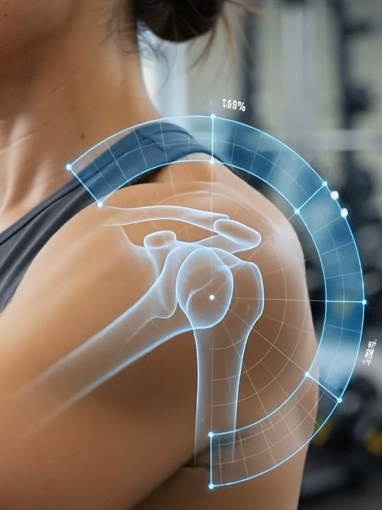
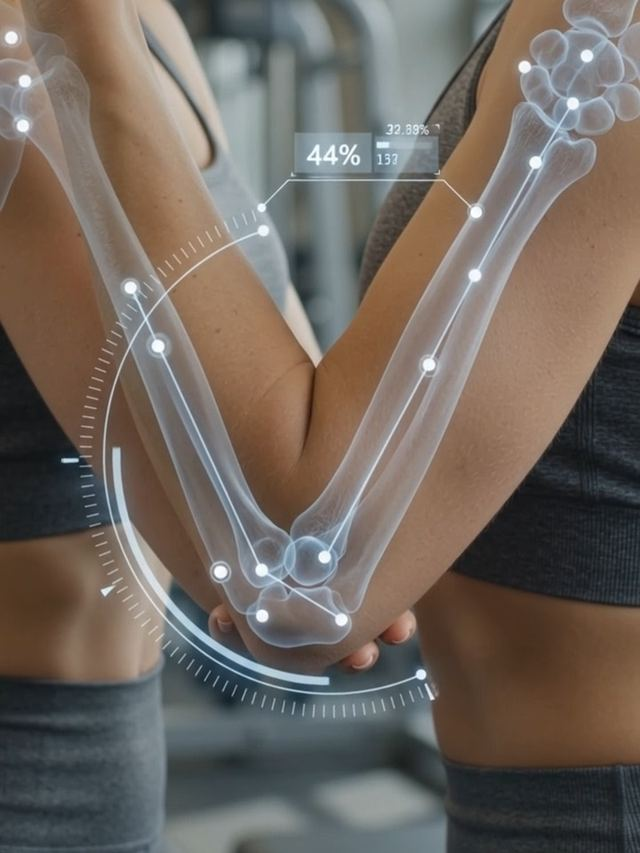
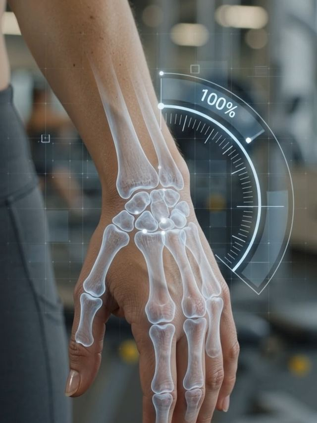
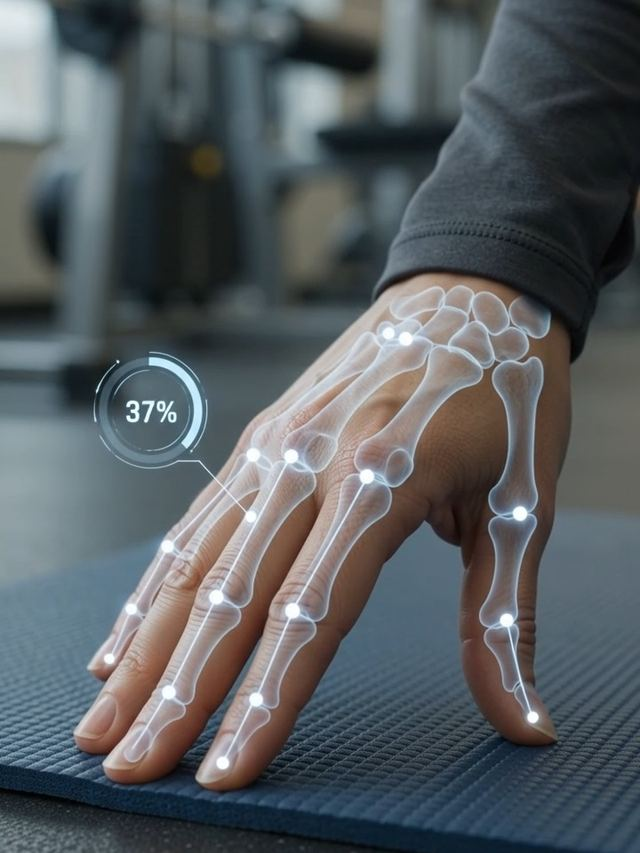
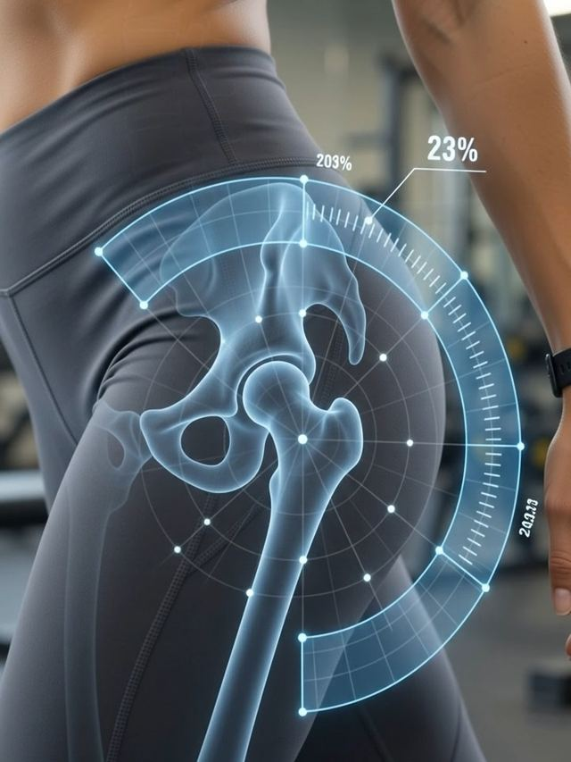
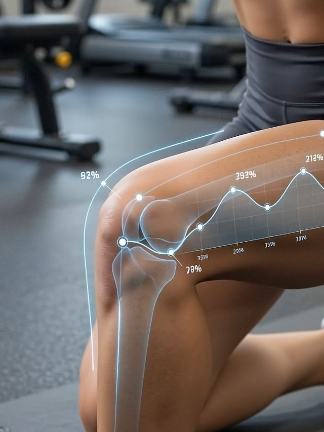
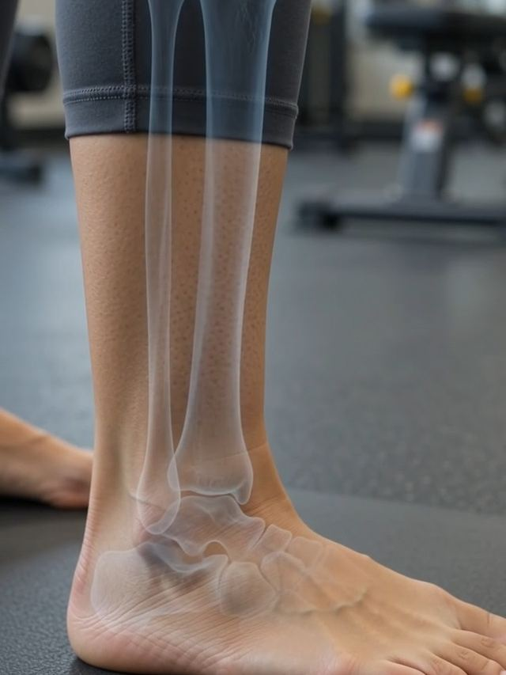

Everyday joint & muscle pain, explained simply
General information to help you recognise common patterns in ten frequently affected areas — not a diagnosis. KindFare™ is a wellbeing companion, not a medical device, and none of this replaces an assessment from your GP, physiotherapist or another registered healthcare professional.

Most neck pain is what's called "non-specific" or mechanical neck pain — stiffness linked to posture, stress or how you've been sitting, rather than anything more serious — and some age-related wear in the neck (cervical spondylosis) is extremely common, often without any symptoms at all. Pain that radiates down the arm with tingling or numbness is more likely to involve a nerve and is worth mentioning to a professional.
How KindFare™ can help: the Cellular Routine includes short, guided neck and upper-back mobility sessions, and Mia can prompt a gentle movement break if your Apple Health data shows a long, sedentary stretch. If neck pain follows an injury, comes with weakness, or doesn't ease with simple movement and rest, see your GP — community NHS physiotherapy can often be accessed directly too.

Pain at the top or outside of the shoulder that's worse lifting your arm overhead, reaching behind your back, or lying on that side at night usually points to shoulder impingement — where the rotator cuff tendons get squeezed during movement. It's most often an overuse pattern that builds gradually, particularly in mid-life, rather than one dramatic injury.
How KindFare™ can help: the Cellular Routine includes shoulder mobility and rotator-cuff-focused movement, paced gently so you're never pushing through pain, and Mia can help you track whether certain activities consistently trigger symptoms. If shoulder pain is severe, follows a fall, or comes with real weakness lifting your arm, see your GP rather than continuing to self-manage.

Pain on the outside of the elbow (tennis elbow) or the inside (golfer's elbow) is usually down to repeated gripping and wrist movement — racquet sports, DIY, gardening or long hours typing — rather than one single injury. It often shows up as tenderness spreading down the forearm that gets worse when you grip or lift, and while most cases settle on their own, that can take anywhere from a few months up to a year or more.
How KindFare™ can help: the Cellular Routine feature includes gentle, guided elbow and forearm mobility work designed to ease strain on overworked tendons, and Mia helps you keep track of how consistently you're keeping up with it. If the ache isn't easing with rest and gentle movement, or it's affecting your grip, that's worth raising with your GP or a physiotherapist — KindFare™ is there to support your routine, not replace that conversation.

Numbness, tingling or a burning feeling in the thumb, index and middle fingers — often worse at night or first thing in the morning — is the classic sign of carpal tunnel syndrome, caused by pressure on a nerve running through the wrist. It's more common with repetitive wrist movement, pregnancy, an underactive thyroid or wrist arthritis, though often there's no single obvious cause.
How KindFare™ can help: KindFare™ can't diagnose nerve compression, but its Cellular Routine includes wrist and forearm mobility work that supports general joint health, and Mia can help you notice patterns — like whether symptoms cluster around certain activities or times of day — worth mentioning to your GP. Numbness that's persistent, worsening, or affecting your grip is a reason to get it checked rather than wait it out.

Painful, stiff or swollen finger joints — sometimes with small bony bumps developing over time — are the most common signs of hand osteoarthritis, usually affecting the thumb base and the joints nearest the fingertips first. It tends to build up gradually and is often worse after activities involving a strong pinch or grip, like turning a key or opening a jar.
How KindFare™ can help: the Cellular Routine includes gentle hand and finger mobility work, and because hand osteoarthritis often runs alongside other joint conditions, Mia's day-to-day tracking gives you and your GP a fuller picture over time. Sudden swelling, redness or warmth in a single joint is different from typical wear-and-tear arthritis and should be checked by a doctor.
Low back pain that spreads down one leg, sometimes with numbness, tingling or a burning sensation, is usually described as sciatica — irritation of the nerve roots leaving the lower spine. NICE guidance is clear that most low back pain and sciatica improves with continued gentle activity rather than rest, though flare-ups can be genuinely painful in the meantime.
How KindFare™ can help: the Cellular Routine is built around exactly this kind of gentle, consistent movement for the lower back and hips, and Mia can help keep you encouraged through a flare-up rather than stopping activity altogether. Sciatica with loss of bladder or bowel control, or numbness around the saddle area, needs urgent medical attention — that's the one case where you should stop and seek help immediately rather than using any app.
A dull, one-sided ache low down at the back of the pelvis — just to one side of the base of the spine, sometimes spreading into the buttock or upper thigh — often points to the sacroiliac (SI) joints, where the spine meets the pelvis. It's commonly triggered or worsened by standing on one leg, climbing stairs, prolonged sitting, or a sudden change in activity, and is a well-recognised cause of lower back pain in its own right, distinct from disc- or nerve-related pain.
How KindFare™ can help: the Cellular Routine includes gentle pelvis and deep-core stability work designed to support the SI joints without provoking them, and Mia can help you track which activities or positions tend to trigger flare-ups. If pain is severe, follows an injury, or comes with numbness, weakness or unexplained weight loss, see your GP or a physiotherapist for a proper assessment.

Hip pain that's worse first thing in the morning, eases once you get moving, then returns after sitting a while often points to osteoarthritis — wear in the cartilage that cushions the joint. Pain felt more on the outside of the hip, especially lying on that side at night, is more often bursitis, inflammation of the small fluid-filled cushions around the joint; both can radiate into the groin, buttock or thigh.
How KindFare™ can help: weight management and regular movement are core, NICE-recommended parts of managing hip osteoarthritis, and KindFare™'s combined calorie tracking and Cellular Routine hip mobility work are designed to support exactly that, without asking you to do anything high-impact. Persistent or worsening hip pain — especially if it's disturbing your sleep or affecting how you walk — is worth raising with your GP.

Knee pain and stiffness that's worse after rest, together with a grinding or catching feeling during movement, commonly points to osteoarthritis, while pain around or behind the kneecap — especially going up and down stairs — often suggests patellofemoral pain. Both are strongly linked to the load going through the joint, which is why weight and activity levels matter so much.
How KindFare™ can help: this is where KindFare™'s design comes together — NICE guidance names weight management and regular, appropriate exercise as core treatments for knee osteoarthritis, and that's precisely what KindFare™'s nutrition tracking and Cellular Routine knee mobility work are built to support, with Mia keeping it manageable day to day. Persistent swelling, locking, or a knee that gives way needs a proper assessment from your GP or physiotherapist.

Sharp heel pain that's worst with your first steps in the morning, easing as you move but returning after standing or walking a while, is the classic pattern of plantar fasciitis — strain in the band of tissue connecting your heel to your toes. It's more common if you're on your feet a lot, carrying extra weight, or have a tight calf, which increases stress through the heel.
How KindFare™ can help: the Cellular Routine includes calf and foot mobility work aimed at easing that tension, and its Apple Health integration helps you and Mia keep an eye on step counts so activity stays steady rather than spiking. Heel pain that doesn't improve after a few weeks of rest and gentle stretching is worth a GP or podiatry review.